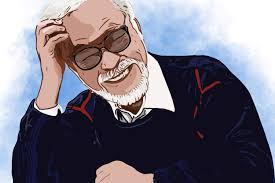

- Name:宮崎 駿, Miyazaki Hayao
- Other names: Akitsu Saburō (秋津 三朗),Teruki Tsutomu (照樹 務)
- Born:5 January 1941 (age 79) Bunkyō, Tokyo, Empire of Japan
- Nationality:Japanese
- Alma mater:Gakushuin University
- Occupation: Animator filmmaker screenwriter author manga artist
- Years active: 1963–present
- Employer:
- Toei Animation (1963–1971) A-Pro (1971–1973) Zuiyō Eizō (1973–1975) Nippon Animation (1975–1979) Tokyo Movie Shinsha (1979–1982) Topcraft (1982–1985) Studio Ghibli (1985–present)
- Spouse(s):Akemi Ōta